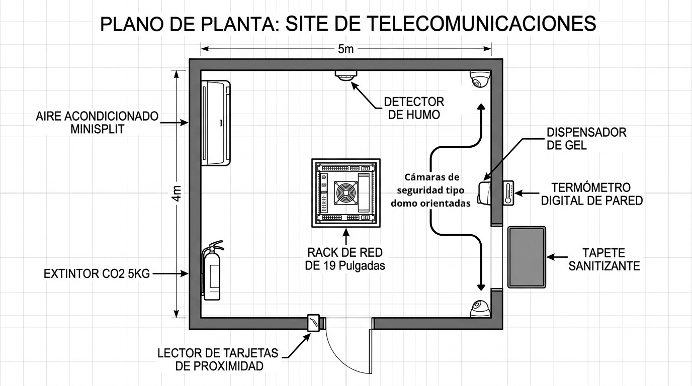
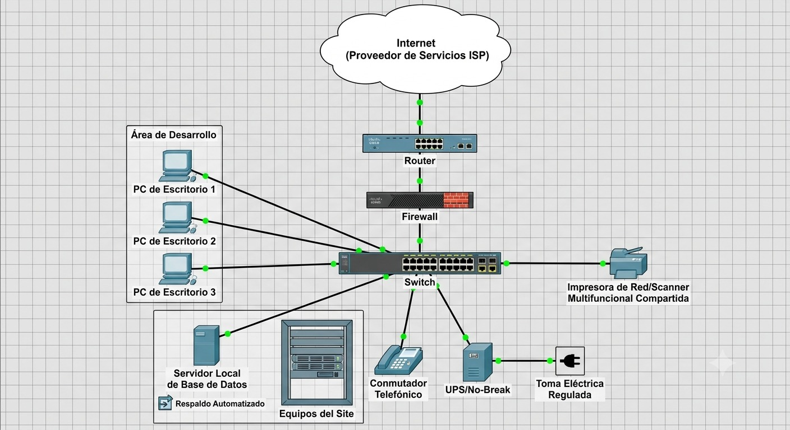

Actividades del Resultado 2.1
Informe de Políticas, Controles y Normatividad de TI
Políticas de asignación, seguridad física del site, redes LAN/WAN, inventario tecnológico y normatividad de uso.
Políticas de asignación, seguridad física del site, redes LAN/WAN, inventario tecnológico y normatividad de uso.
Cada empleado es legal y administrativamente responsable del equipo de cómputo y periféricos asignados a su cargo. Al recibir un equipo, el empleado firmará el Formato de Asignación de Equipo, comprometiéndose a usarlo exclusivamente para fines laborales y a reportar fallas de inmediato.
Los equipos nuevos o de mayor rendimiento se asignarán con base en las necesidades críticas del puesto (ej. Desarrollo y Redes tendrán prioridad sobre áreas administrativas básicas). Los equipos liberados pasarán a revisión técnica para su posterior reasignación a áreas de menor demanda técnica.
| No. Serie | CPU | Monitor | Nombre | Puesto | Depto. | Asigna |
|---|---|---|---|---|---|---|
| MXL60301X | INV-CPU-2026-01 | INV-MON-2026-01 | Carlos Mendoza | Programador | Sistemas | Lic. Ángel R. Chan Rosado |
| MXL60302Y | INV-CPU-2026-02 | INV-MON-2026-02 | Sofía Alcocer | Diseñador Web | Soporte Técnico | Lic. Ángel R. Chan Rosado |
Al ingreso al área del site, todo personal autorizado deberá aplicar gel antibacterial, verificar que su temperatura sea óptima y pasar por el tapete sanitizante.
Las puertas y ventanas permanecerán cerradas y aseguradas mediante cerradura biométrica o tarjeta magnética.

Plano 2D del site que muestra la distribución del rack de red, aires acondicionados, detectores de humo, extintores CO2, cámaras de seguridad tipo domo, termómetro digital de pared, lector de tarjetas de proximidad, dispensador de gel y tapete sanitizante.
Todas las terminales deben tener instalado el software antispyware corporativo, el Firewall local activado, y la herramienta Deep Freeze configurada en el disco del sistema (C:\) para que la escuela o empresa mantenga los equipos limpios ante cualquier reinicio.
Los servidores realizarán respaldos automatizados de bases de datos de forma diaria a las 23:00 hrs. Los usuarios finales deberán sincronizar sus archivos con el servidor local los viernes de cada semana.

Topología del sitio que muestra la conexión desde el proveedor ISP de Internet, pasando por el Router, Firewall y Switch hacia las terminales del área de desarrollo, servidor local de base de datos, conmutador telefónico, UPS/No-Break y la impresora de red multifuncional compartida.
Todos los servidores, ruteadores, concentradores de red y computadoras administrativas se localizan físicamente en el Edificio A, planta alta, sujetos a auditoría mensual coordinada por la Jefatura de Informática.
Para proyectos temporales de desarrollo web o prácticas escolares extensas, se priorizará el esquema de arrendamiento financiero (renta) con el proveedor TecnoRenta S.A., garantizando sustitución inmediata del hardware por obsolescencia o daño, evitando la devaluación de activos propios.
Queda estrictamente prohibido conectar dispositivos personales (smartphones, laptops propias) a la red LAN cableada de la organización. No se permite la descarga de software sin autorización de la Jefatura.
Todo usuario tendrá credenciales de acceso únicas vinculadas a su equipo y puesto.
Los equipos adquiridos contarán con una vigencia de garantía mínima de 3 años directamente con el fabricante.
El Aire Acondicionado mantendrá el Site a una temperatura constante de 21°C y 45% de humedad. El mantenimiento preventivo de los equipos de climatización será bimestral.
Todo nodo de red debe seguir el estándar TIA/EIA-568-B, debidamente etiquetado en el patch panel del rack y en la roseta del usuario.
Únicamente el Jefe de Proyecto Informática o el técnico asignado tienen acceso físico y contraseñas de configuración del Switch y Ruteador.
El Rack principal estará conectado a un No-Break Tripp Lite de 3000VA para soportar apagones repentinos. Se anexa cotización vigente para la adquisición de una Planta Eléctrica de Emergencia marca Generac de 15 kW con arranque automático.
Documento maestro que archiva la distribución de los 24 nodos instalados, mapas de canalización por canaleta plástica de alto impacto y la asignación del direccionamiento IP estático del sitio (192.168.1.0/24).